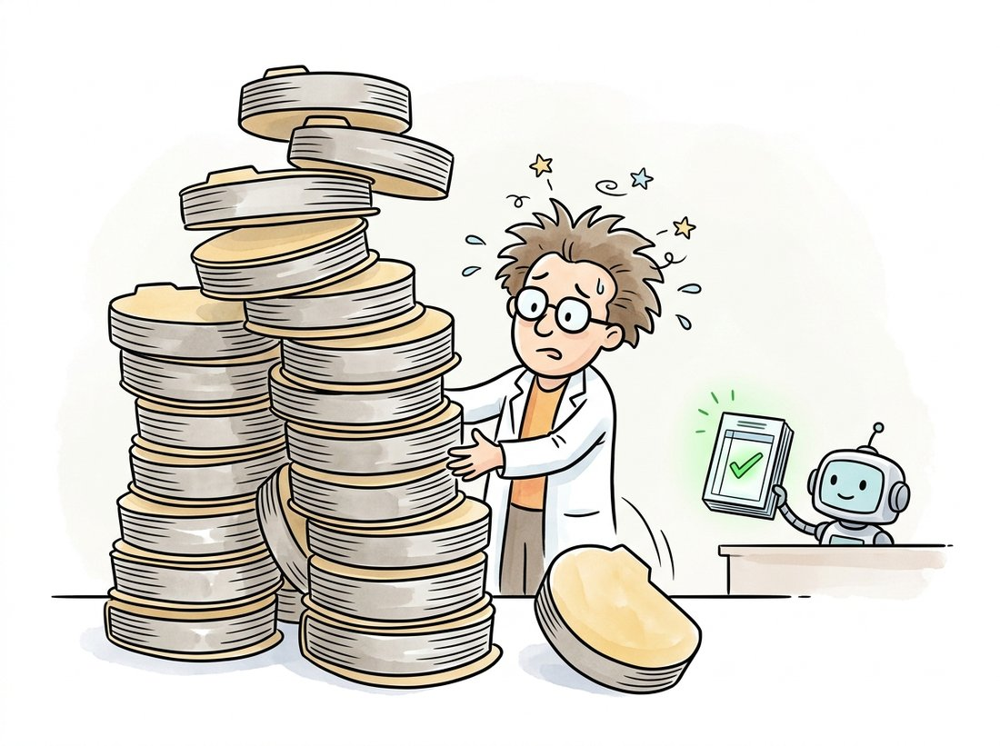

"Run number forty-seven beat everything. I am almost certain it was forty-seven. It might have been thirty-one. The good one had the higher learning rate. Or the lower one. Nobody logged it."
An Untracked Training Run, Lost to Memory
A deep vision project is a stream of dozens of training runs, and without a tool that records every run's config, metrics, and artifacts, the knowledge you paid GPU-hours to acquire evaporates the moment you close the terminal. Experiment tracking is the discipline of logging each run so that runs are comparable, reproducible, and recoverable. Three tools dominate, Weights & Biases, MLflow, and TensorBoard, and the right choice depends on whether you want a hosted dashboard, a self-hosted registry, or a zero-setup local viewer. This section covers them, then closes Part III with a curated map of where to read next.
Section 29.3 versioned the data; this section versions the experiments. A real project produces a stream of runs, each with a different learning rate, augmentation, backbone, or dataset version, and the single most common failure of practice is not technical at all: it is forgetting which run was good and why. Experiment tracking solves this by logging every run's hyperparameters, metrics over time, and output artifacts to a queryable store. We compare the three dominant trackers, show the few lines that instrument a training loop, and then assemble the chapter's, and Part III's, reading list. The thread that ties the whole chapter together is reproducibility: a config (Section 29.2), a dataset version (Section 29.3), and now a logged run, together make a result something you can stand behind and rerun.
1. What a Tracker Records Beginner
An experiment tracker captures four things per run: the config (every hyperparameter and the code or data version), the metrics (loss, accuracy, mAP, logged over training steps so you see the curve, not just the endpoint), the artifacts (the trained checkpoint, sample predictions, confusion matrices), and the environment (library versions, hardware, git commit). With those recorded, two runs become comparable side by side, a good run becomes reproducible, and a result from six months ago becomes recoverable. Figure 29.4.1 shows where the tracker sits in the loop relative to the data and model tooling of the previous sections.
2. The Three Trackers
Weights & Biases (W&B) is the most widely used: a hosted service with a rich web dashboard, automatic metric plotting, hyperparameter sweep orchestration, and artifact and model registries, with a free tier for individuals and academics. MLflow is open-source and self-hostable, built around an experiment store and a model registry, favored by teams that need to keep everything on their own infrastructure and integrate with deployment pipelines. TensorBoard is the lightest: it ships with PyTorch and TensorFlow, runs locally with zero setup, and visualizes scalars, images, and histograms, but it lacks the cross-run comparison, sweeps, and registries of the other two. Many practitioners log to TensorBoard during quick local iteration and to W&B or MLflow for anything they need to remember.
# Instrument a training loop with Weights & Biases: record the full config
# up front, stream per-epoch metrics so the dashboard plots the whole curve,
# and save the best checkpoint as a versioned artifact tied to this run.
import wandb
# Initialize a run: name the project and log the full config up front.
wandb.init(project="hard-hat-detection", config={
"backbone": "resnet50", "lr": 1e-3, "epochs": 50,
"dataset_version": "v3", "augmentation": "mosaic",
})
for epoch in range(50):
train_loss = train_one_epoch(...) # your training step
val_map = evaluate(...) # your validation metric
# Log metrics each epoch so the dashboard plots the full curve.
wandb.log({"train/loss": train_loss, "val/mAP": val_map, "epoch": epoch})
# Save the best checkpoint as a versioned artifact tied to this run.
artifact = wandb.Artifact("detector", type="model")
artifact.add_file("best.pt")
wandb.log_artifact(artifact)
wandb.finish()
wandb.init records the full config (including the dataset version from Section 29.3), wandb.log streams metrics each epoch so the dashboard shows the training curve rather than a final number, and the artifact call stores the checkpoint tied to this exact run. Three or four lines turn an ephemeral run into a recoverable record.
The instrumentation is deliberately light, a handful of lines, because the point is that it should cost almost nothing to add and yet capture everything. Logging the dataset_version in the config is what links this run to the right data snapshot; logging metrics per epoch is what lets you diagnose a run that diverged or overfit by reading its curve. Ultralytics, Detectron2, and MMDetection all have built-in hooks that log to these trackers automatically, so in framework workflows you often enable tracking with a single config flag rather than writing the calls yourself.
The deep-learning equivalent of a folk horror story is the checkpoint folder named final, then final_v2, then final_real, then final_USE_THIS, then final_USE_THIS_actually, each a few hundred megabytes, none with a recorded learning rate. Every practitioner has produced this folder at least once, usually the week before they adopted a tracker. The naming convention scales linearly with panic and inversely with reproducibility, and it is the single most common artifact of a project that skipped the two lines of wandb.init and wandb.log. The illustration below contrasts that teetering pile with the tidy ledger a tracker keeps.

| Tracker | Hosting | Strengths | Reach for it when |
|---|---|---|---|
| Weights & Biases | Hosted (self-host option) | Rich dashboard, sweeps, registries, collaboration | You want the full experience and a shareable dashboard |
| MLflow | Self-hosted, open-source | On-prem control, model registry, deployment integration | Data must stay on your infrastructure |
| TensorBoard | Local, zero-setup | Ships with PyTorch, instant local plots | Quick local iteration; no cross-run memory needed |
The value of experiment tracking is invisible on the day you add it and enormous three months later. The cost is a few lines and a few seconds per run; the payoff arrives when a result needs defending, a regression needs bisecting, or a "we tried that already" question needs an actual answer. Untracked, the knowledge a hundred GPU-hours bought lives only in a researcher's memory and a folder of cryptically named checkpoints, and it decays fast. Tracked, it becomes a queryable record: filter to all runs above 85 percent mAP, sort by learning rate, see which dataset version each used. The discipline is cheap precisely because the alternative is to relearn what you already paid to discover.
The do-it-yourself version of experiment tracking is a sprawl of print statements, a results.csv you append to by hand, matplotlib scripts to plot the curves afterward, and a naming convention for checkpoint folders that you will violate by run twenty. None of it is queryable, comparisons are manual, and the environment and git commit are never captured. Two lines, wandb.init(config=...) and wandb.log(metrics), replace all of it with an automatic dashboard, cross-run filtering and sorting, artifact versioning, and a captured environment. The tracker handles the storage, the plotting, the comparison UI, and the metadata capture that hand-rolled logging always omits, especially the git commit and library versions that make a run truly reproducible.
3. The Full Reproducibility Stack Intermediate
Step back and assemble what the chapter has built. A reproducible deep vision result is the conjunction of four recorded things: a model loaded from a hub at a known version (Section 29.1), a config that fully specifies the architecture and training (Section 29.2), a dataset version that freezes the data (Section 29.3), and a logged run that captures the metrics, artifacts, and environment (this section). Miss any one and the result becomes a number you cannot rerun. The compact way to remember it: a reproducible result stands on four legs, model, config, data, run; saw off any one and the table falls over. These are the same four verbs the chapter opened with, now frozen as records: the model you downloaded, the config you adapted, the data you audited, the run you tracked. This is the deep vision analogue of the experiment-registry discipline that good research practice has always demanded, now supported by tooling that makes the discipline nearly free. The same stack carries into the generative models of Part IV, where reproducibility is, if anything, harder because outputs are stochastic. The illustration below shows the four-legged table and what happens when one leg goes missing.
A computer-vision team published an internal benchmark showing their new detector reached 89.4 percent mAP, and leadership greenlit a productization effort around it. Three months later, when an engineer tried to retrain the model for the production data pipeline, the best they could reach was 85 percent, and nobody could explain the four-point gap. The original run had been a one-off script on a researcher's laptop: no logged config, no recorded dataset version, no environment capture. After a painful week of forensics, they discovered the original had used an older dataset split before a relabeling pass and a learning-rate warmup that had never made it into the shared code. The result was real, but it was unrecoverable, and the productization timeline slipped by a quarter. The team's response was a hard rule, now standard for them: no result counts unless it was produced by a tracked run logging its config, its dataset version, and its environment. The few lines they had skipped to "move fast" cost them a quarter.
4. Curated References & Further Reading Beginner
The field will not hold still long enough for any reading list to stay complete; by the time you finish Part IV, a backbone or detector named here will have been superseded. So the question worth answering is not "what should I read once" but "where do I look when the model I need did not exist yesterday". This closes Part III, so the reading map below is for the whole part, not just this chapter. It is organized by where you would actually go for each need: the documentation trails you live in daily, the courses that teach the foundations, and the survey-level references that give the conceptual map. The chapter index carries the formal annotated bibliography with full citations; this is the practitioner's quick-reference version.
For daily documentation, four trails cover most of Part III: the PyTorch docs and torchvision docs for the framework and standard models; the timm docs for backbones; the Hugging Face Transformers docs for transformer and vision-language models; and the framework docs for Detectron2 and MMDetection when you compose detectors. For courses, Stanford's CS231n: Convolutional Neural Networks for Visual Recognition remains the canonical introduction to the foundations of Chapter 19 through Chapter 22, and the fast.ai course and book teach the transfer-learning workflow of Chapter 21 code-first. For the conceptual map, Szeliski's freely available Computer Vision: Algorithms and Applications (2nd ed., 2022) connects the deep methods here to the classical ones of Parts I and II with full references.
Staying current without drowning is its own skill. The sustainable workflow is narrow and habitual: follow Papers with Code leaderboards for the tasks you actually work on (it ties papers to runnable code, which filters out the unreproducible); watch the timm and Hugging Face release notes, since new architectures arrive there as loadable weights within weeks; and read the proceedings of one or two venues (CVPR, ICCV, NeurIPS) rather than the arXiv firehose. The goal is not to read everything; it is to know where the model you need will appear and how to load it the day it does, which, as Section 29.1 argued, is now the more durable skill than memorizing any single architecture.
Experiment tracking is being absorbed into larger reproducibility and automation infrastructure. The 2024-2026 generation of tools couples trackers with data and model registries so that a deployed model carries a verifiable lineage back to its training data version and config, the provenance requirements now appearing in AI governance frameworks and echoed in the safety discussion of Chapter 37. In parallel, hyperparameter optimization has moved from manual sweeps to automated search (W&B Sweeps, Optuna, Ray Tune) and increasingly to agentic loops where an LLM-driven agent proposes configs, launches tracked runs, reads the logged metrics, and iterates, turning the human experimenter into a supervisor of an automated search. The constant across all of it is the logged run: agentic experimentation only works because every run is recorded in a queryable, comparable form, which makes the unglamorous discipline of this section the foundation the flashier automation is built on.
5. Summary and the Road to Part IV
Experiment tracking completes the deep vision stack and the reproducibility contract. A tracker records each run's config, metrics, artifacts, and environment: Weights & Biases for the rich hosted experience, MLflow for self-hosted control, TensorBoard for zero-setup local iteration. Combined with a hub-loaded model, a config, and a dataset version, a logged run makes a result comparable, reproducible, and recoverable, and the few lines it costs are repaid the first time a result must be defended or rerun. With Part III's workshop fully organized, models, frameworks, data, and experiments, the book turns to generation. Chapter 30: Foundations of Generative Modeling opens Part IV, and the entire deep vision stack comes along: the backbones become encoders and feature extractors, the trackers log generative runs, and the hubs distribute the diffusion models. The question changes from understanding images to creating them.
List the minimum set of things that must be recorded for a deep vision training result to be reproducible six months later, drawing on all four sections of this chapter. For each item, name the tool from the chapter that records it and state, in one sentence, what goes wrong if that item is missing. Then explain why logging only the final metric (the 89 percent) is the least useful thing you can record.
Take any small training loop from Part III (a CIFAR-10 classifier fine-tuned from a timm backbone is ideal) and instrument it with one of the three trackers. Run it three times with different learning rates, logging the config and the per-epoch training and validation metrics. Open the dashboard, overlay the three runs' validation curves, and write a short note interpreting the comparison: which learning rate was best, whether any run overfit (and how the curve revealed it), and how the tracker made the comparison easier than reading three log files.
Re-read this section's field story about the run nobody could reproduce. Write a post-mortem (about one page) that identifies each specific recorded item the original run was missing (config, dataset version, environment, and so on), maps each to the tool in this chapter that would have captured it, and proposes a concrete one-page team policy that would prevent a recurrence. Conclude with a short argument for why "moving fast" by skipping tracking is usually slower in expectation, using the quarter-long slip as the cost estimate.